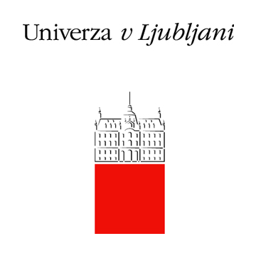

Kaj je Pišek 
Portal Pišek je nastal leta 2018 z željo ponuditi slovenskemu šolskemu prostoru sklop nalog, ki se jih rešuje s slikovnim programskim jezikom. S tem naj bi predstavljal nekakšen most med nalogami v Mednarodnem tekmovanju iz računalniškega razmišljanja – Bober in Srednješolskem tekmovanju ACM iz računalništva in informatike – RTK. Glavnina nalog na portalu Pišek je bila drugače dodana leta 2019 v sklopu projekta Naloge za poučevanje in učenje računalniškega mišljenja - Portal Pišek (NPUR), pri katerem sodelujeta Fakulteta za matematiko in fiziko in Poligon, kreativni center. Na portalu so ustvarjene 4 učne poti (Zgodbe, Programski koncepti, Učbenik, Code Week), ali 4 metode uporabe za pridobivanje znanja iz programiranja v slikovnem programskem jeziku Blockly. Vse učne poti so smiselno zasnovane, tako glede na težavnost nalog kot glede na možnost preverjanja znanja, od učencev in učiteljev oziroma od dijakov in profesorjev pa bo odvisno, kako in na kakšen način se bo portal najbolje uporabljalo.
V času vsesplošne potrebe po razumevanju algoritmičnega načina mišljenja in pridobitvi veščin v t. i. digitalni pismenosti, lahko v Projektu Pišek najdemo poskus pravočasne intervencije v slovenski (izobraževalni) prostor, v katerem smo bili do sedaj priča kroničnemu pomanjkanju kvalitetnih nalog v slovenskem jeziku ter primanjkljaju dobro zasnovanih načinov poučevanja osnov programiranja - dotični portal zato ni le nova baza nalog, ampak je hkrati premišljeno zasnovani priročnik za njihovo tem boljšo izrabo.
Naloge
Zgodbe
V sklopu Zgodbe najdemo 8 različnih avtorskih sklopov nalog (Pišek, Robot, Ples, Tabornik, Zmajček, Gosenica Eva, Gasilka in Ladja), sicer oblikovanih in ustvarjenih s strani študentov in študentk pri danem projektu. V želji, da bi bilo programiranje tem bolj interaktivno in izpolnjujoče, smo poskušali tovrstno abstraktno učenje vpeljati v že znani kontekst. V celoti je pripravljenih več kot 250 nalog za reševanje.
Programski koncepti
Sklop Programski koncepti je namenjen seznanjanju s - ali utrjevanju že pridobljenega znanja - posamičnimi programskimi ukazi (zaporedje ukazov, zanke, vhod/izhod in spremenljivke, pogojni stavki, podprogrami, tabele in nizi), s katerimi se tudi sicer srečamo pri reševanju ostalih sklopov oziroma ostalih nalog. Zaradi shematične ureditve in preglednosti, je tale učna pot kot nalašč za izboljšanje učnega procesa.
Učbenik
Naloge iz sklopa Učbenik temeljijo na e-učbeniku za uvod v programiranje, do katerega lahko tudi prosto dostopamo na spletu. Ker slednji služi za odličen teoretski kot tudi praktični uvod v problematiko programiranja in ker ob tem bralca dodobra seznani s slikovnim programskim jezikom Blockly, smo se odločili, da naloge iz učbenika prenesemo na Portal Pišek - zavoljo tega je reševanje nalog sedaj veliko bolj pregledno in cilju po izboljšanju uporabniške izkušnje primerno. Sklop je zato razdeljen na tri dele. V prvem so naloge, ki so take kot so v učbeniku. Drugi del prinaša vaje, ki temeljijo na nalogah iz učbenika (pokrivajo iste koncepte), a so zastavljene malo drugače. Tretji podsklop Kaj že znam pa načeloma ni vezan na učbenik, ampak zajema naloge, s katerim lahko preverimo znanje osnovnih konceptov, kot jih pokriva učbenik.
Code Week
Iz vseh predhodnih sklopov nabrane, a na novi način razvrščene naloge (za pokušino, 4.-6. razred, 7.-9. razred, 7.-9. razred težje in srednja šola) v sklopu Code Week so namenjene šolam, ki sodelujejo v Evropskem tednu programiranja (EU Code Week). Pri oktobrskih aktivnostih projekta lahko sodelujejo šole, posamezni razredi ali krožki. Edini pogoj za sodelovanje je, da svojo učno uro ali več njih vpišete na zemljevid: codeweek.eu/events.
Uporabniška izkušnja
Vaša uporabniška izkušnja nam je zelo pomembna. Učitelje in učiteljice oziroma profesorje in profesorice vabimo, da nam posredujete svoje mnenje o portalu v kratki spletni anketi. Prav tako k deljenju izkušenj s portalom vabimo učence in učenke ter dijake in dijakinje v kratki anketi za učence.
Avtorji
Pri projektu so sodelovali mentorji mag. Matija Lokar, dr. Gregor Jerše in slovenska ambasadorka Evropskega tedna programiranja Katja K. Ošljak ter študenti Univerze v Ljubljani in sicer Luka Čušin, Blaž Dobravec, Urška Erjavec, Zoran Fijavž, Žiga Flajs, Karel Križnar, Ajda Lah, Anže Lokar, Aleš Poklukar, Dimitar Stoilkov, Krištof Špenko in Maks Valenčič.
Projekt NPUR
Del Portala Pišek je nastal v okviru projekta Naloge za poučevanje in učenje računalniškega mišljenja – Portal Pišek (NPUR), ki ga sofinancirata Evropski socialni sklad, Ministrstvo za izobraževanje, znanost in šport Republike Slovenije ter Javni štipendijski, razvojni, invalidski in preživninski sklad Republike Slovenije. Projekt sofinancirata Republika Slovenija in Evropska unija iz Evropskega socialnega sklada.



Platforma
Portal Pišek je osnovan na francoskem sistemu Algoréa in na slikovnem programskem jeziku Blockly.
Da naše Pišče lahko uspešno rešitve išče, pomaga tudi